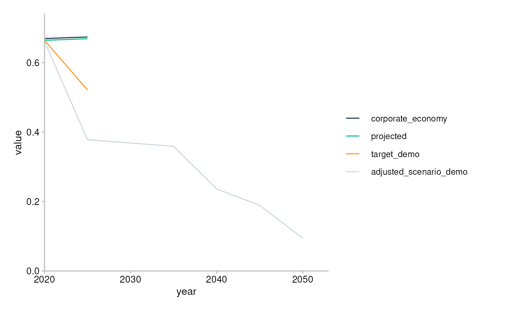
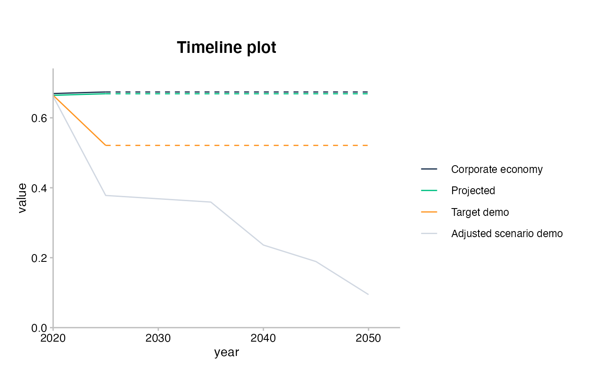
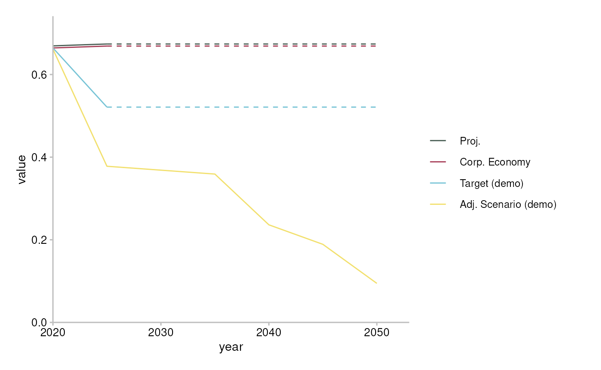
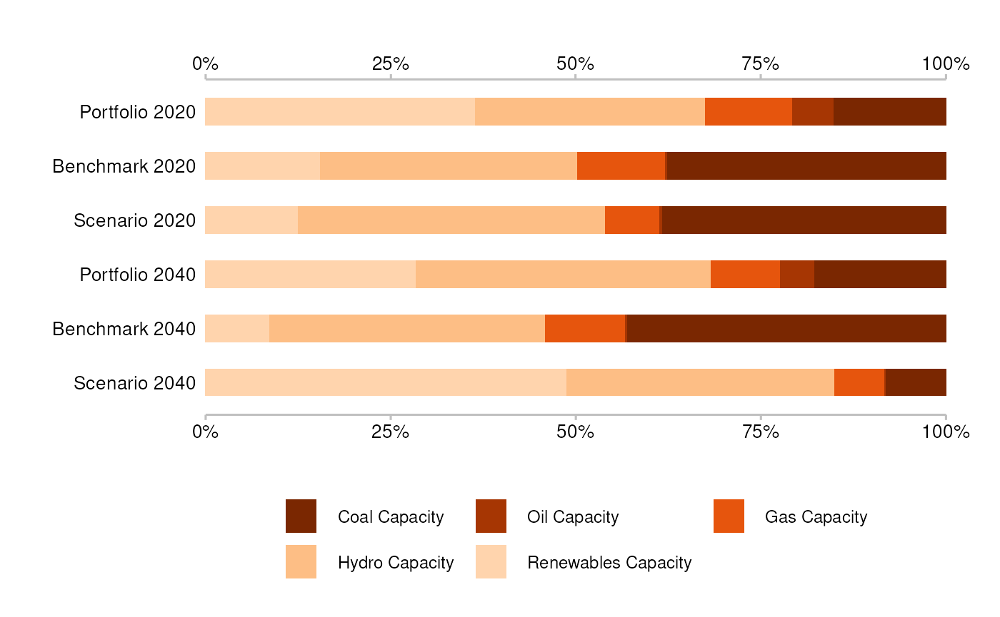
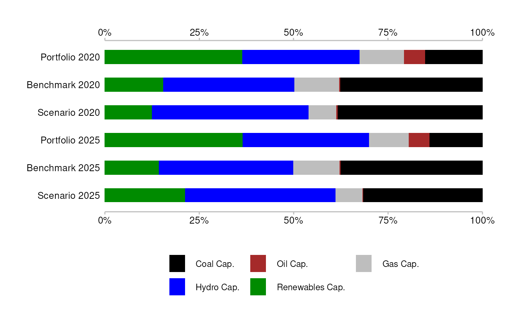
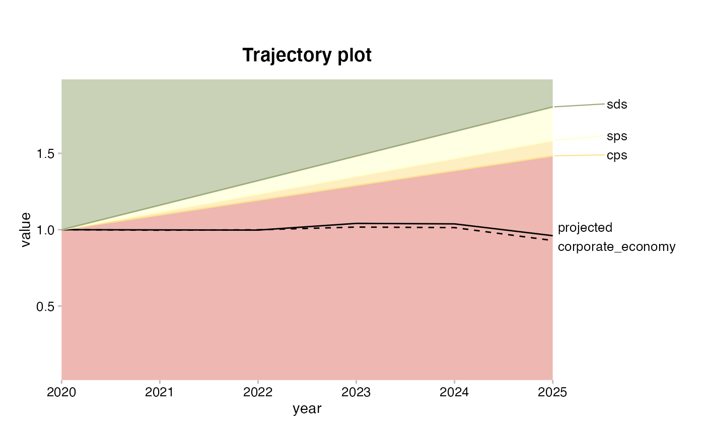
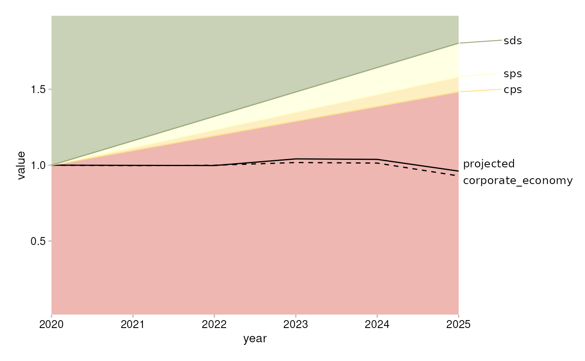
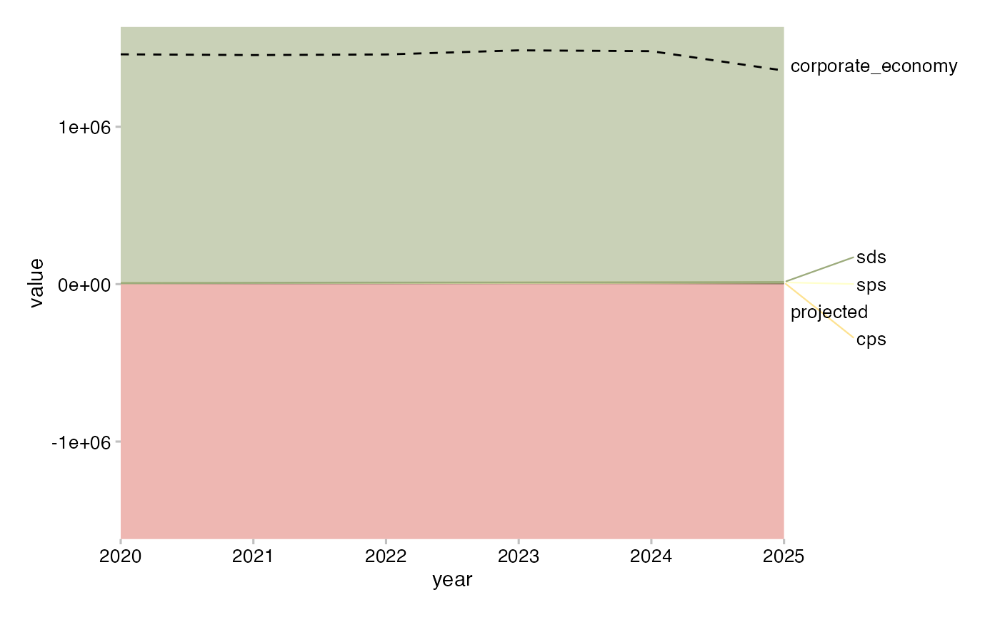

This article shows the “X” API. It assumes you already read the article comparing the “X” and “Y” APIs.
Use plot_timelineX() with sda-like data. You’ll need to pick the specific rows you want to plot. For details see the documented “Requirements” of the argument data, or try intuitively and let the error messages guide you.
plot_timelineX(sda)
#> Error: `data` must have a single value of `sector` but has: automotive, aviation, cement, oil and gas, shipping, coal, steel.
#> Pick one value, e.g. 'automotive', with:
#> dplyr::filter(data, sector == 'automotive')The error message suggests you must first pick only one value of sector, for example “cement”.
sda %>%
filter(sector == "cement") %>%
plot_timelineX()
Great! You can now polish your plot. Your options are limitless but these are some typical things you may do:
to_title <- function(x) gsub("_", " ", tools::toTitleCase(x))
sda %>%
filter(sector == "cement", year >= 2020) %>%
mutate(emission_factor_metric = to_title(emission_factor_metric)) %>%
plot_timelineX(extrapolate = TRUE) + labs(title = "Timeline plot")
You can further customize your plot by adding a custom manual scale using ggplot function scale_colour_manual() with custom legend labels.
sda %>%
filter(sector == "cement") %>%
plot_timelineX(extrapolate = TRUE) +
scale_color_manual(
values = c("#4a5e54", "#a63d57", "#78c4d6", "#f2e06e"),
labels = c("Proj.", "Corp. Economy", "Target (demo)", "Adj. Scenario (demo)"))
#> Scale for 'colour' is already present. Adding another scale for 'colour',
#> which will replace the existing scale.
Use plot_techmixX() with market_share-like data. Again, learn which rows to pick by reading the documented “Requirements” of the argument data, or by trial and error.
unique(market_share$metric)
#> [1] "projected" "corporate_economy" "target_cps"
#> [4] "target_sds" "target_sps"
chosen_metrics <- c("projected", "corporate_economy", "target_sds")
market_share %>%
filter(
metric %in% chosen_metrics,
sector == "power",
region == "global"
) %>%
plot_techmixX() + labs(title = "Techmix plot")
You may customize the plot further by:
ggplot function scale_color_manual().plot_techmixX() (by default the extreme years in the data are plotted).At the moment the labels of the bars are derived from the data and it is not possible to change or remove them (as it is possible with “Y” API).
market_share %>%
filter(
metric %in% chosen_metrics,
sector == "power",
region == "global",
between(year, 2020, 2025)
) %>%
plot_techmixX() +
scale_fill_manual(
values = c("black", "brown", "grey", "blue", "green4"),
labels = c("Coal Cap.", "Oil Cap.", "Gas Cap.", "Hydro Cap.", "Renewables Cap."))
#> Scale for 'fill' is already present. Adding another scale for 'fill', which
#> will replace the existing scale.
Use plot_trajectoryX() with market_share-like data. Again, learn which rows to pick by reading the documented “Requirements” of the argument data, or by trial and error.
data <- market_share %>%
filter(
sector == "power",
region == "global",
technology == "renewablescap",
year <= 2025
)
plot_trajectoryX(data) + labs(title = "Trajectory plot")
Use main_line argument to indicate which trajectory line should be most visually salient (solid black line). Without the argument, the first ‘metric’ in data which is not a scenario is used as a main line.
plot_trajectoryX(data, main_line = "projected")
Use normalize = FALSE if you prefer not to normalize to the start year.
plot_trajectoryX(data, main_line = "projected", normalize = FALSE)
If you haven’t done so already, please see the article about the “Y” API.